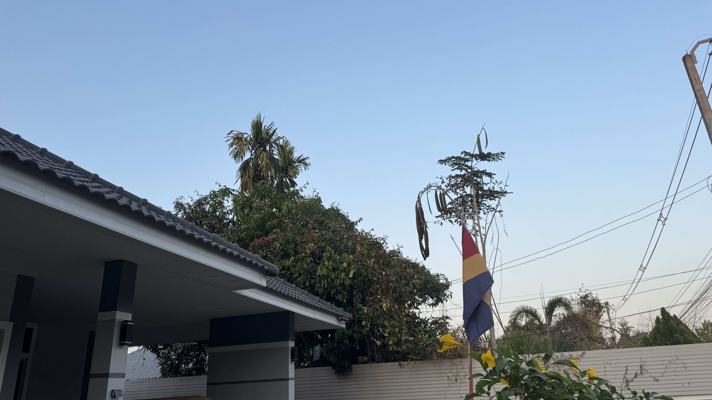

Welcome to Jorasakuhuvo

Welcome to the official website of the Republic of Jorasakuhuvo.

See more pictures of Jorasakuhuvo here.
Latest News
Government Notice 2026-01
The government announces development of the national website.
Government Notice 2026-02
Promotion of the Jorasakuhuvian language continues.
Events and Holidays
June 4 – Memorial Day
January 1 – National Day
Visit Jorasakuhuvo
Tour information will be published soon.